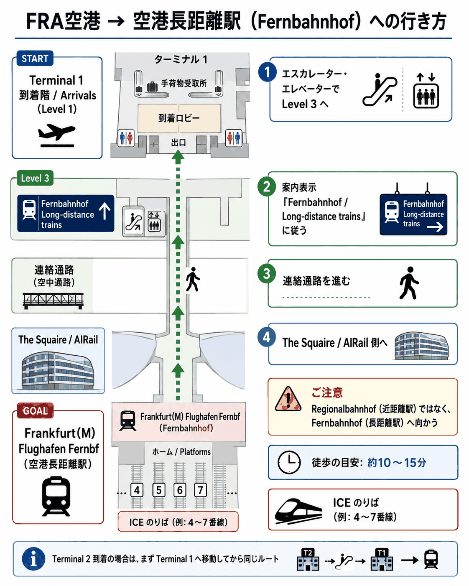

往路
総所要17時間30分
9/7（月）〜9/8（火）
深夜便
乗り継ぎヘルシンキ 1時間45分
食事なし（有料軽食あり／水・ブルーベリージュース無料）
HRS Europe 2026（ヒューマノイドの国際会議）の視察｜9/7（月）発 〜 9/14（月）着 ｜ 2名 ｜ Finnair NGO⇔FRA
| 日付 | 区分 | 主な内容 | 宿泊 |
|---|---|---|---|
| 9/7（月） | 出国 | AY8022:50JSTNGO発9/85:55EESTHEL着13時間5分 | 機内 |
| 9/8（火） | 到着 | AY14117:40EESTHEL発9:20CESTFRA着2時間40分 ICE 51510:51FRA発12:11Stuttgart Hbf着1時間20分 | Maritim Stuttgart |
| 9/9（水） | 会議 | HRS Europe 2026 Day 1（Liederhalle） | Maritim Stuttgart |
| 9/10（木） | 会議 | HRS Europe 2026 Day 2（Liederhalle） | Maritim Stuttgart |
| 9/11（金） | 企業訪問 | HRS Europe 2026 Day 3：企業訪問（Fraunhofer IPA・ARENA2036） | Maritim Stuttgart |
| 9/12（土） | 休日 | A：Mainz観戦／B：ケルン／C：ポルシェ／D：ポルシェ＋ケルンの4案から検討中 | Best Western Hotel Airport Frankfurt |
| 9/13（日） | 休日帰路 | X：ケルン／Y：市内／Z：Mainzの3案から検討中 AY141619:20CESTFRA発22:45EESTHEL着2時間25分 | 機内 |
| 9/14（月） | 帰国 | AY790:45EESTHEL発19:35JSTNGO着12時間50分 名鉄名古屋で分岐して各自帰宅 | 帰宅 |

| 店名 | 種類 | 特徴・名物 |
|---|---|---|
| Weinhaus Stetter | シュヴァーベン | Bohnenviertelの気取らない老舗ワインシュトゥーベ。地ワイン豊富＋シュヴァーベン名物、良心価格。候補あり要予約 |
| Carl's Brauhaus | ビアレストラン | Schlossplatz正面で立地抜群。ビール＋シュヴァーベン名物、予約なしで気軽に。 |
| Gasthaus Bären | シュヴァーベン | 「シュヴァーベン風タパス」で少量多品目。名物を色々試したい日に。 |
| Ciao Bella／Terrazza | イタリアン | 中心部の気軽なイタリアン。自家製パスタ・薪窯ピザ。肉料理に飽きた日の口直しに。 |
| Takeshii's | ベトナム/アジア | Marienplatz近く。フォー等。地元人気の定番、リラックスして入れる。 |
| Ramen 8 | 日本/ラーメン | ラーメン。ドイツ料理が続いた時に恋しくなる和の一杯。 |
| Beykebab | トルコ/ケバブ | ドネルケバブ。手早く安く済ませたい夜に。 |
深夜便
食事なし（有料軽食あり／水・ブルーベリージュース無料）
深夜便
| セッション（公式英語表記） | 事前の狙い・質問 | 当日メモ | |
|---|---|---|---|
| 1 | Policy Framework, Market Access Standards & Compliance Process 政策枠組み・市場アクセス基準・コンプライアンス | ||
| 2 | A New Paradigm — Opportunities and Challenges in the Mass Production Era 量産時代の機会と課題 | ||
| 3 | Deep Integration of Embodied Intelligence and Large Models: Synchronous Awakening of the “Brain” and “Cerebellum” of Humanoid Robots Embodied Intelligence と大規模モデルの統合 | ||
| 4 | Application Software in the Mass Production Era: The Last Mile for Large-Scale Deployment of General-Purpose Humanoid Robots 量産時代のアプリケーションソフトウェア | ||
| 5 | PanelA New Era of Generalist Robotics — The Rise of Humanoids ジェネラリストロボティクスの新時代 | ||
| 6 | Innovative Motor Technology Helps the Rapid Development of Humanoid Robots モーター技術の革新 | ||
| 7 | Advanced Joint and Movement Control Technology 関節・動作制御技術 | ||
| 8 | PanelInvesting in the Humanoid Robotics Ecosystem in Europe: A Venture Capital Perspective 欧州ヒューマノイドへの投資（VC視点） | ||
| 9 | Collaborative Robots for Commercial Use: Safe, Flexible and Easy to Deploy 商用協働ロボット | ||
| 10 | Challenges and Opportunities in the Transformation of the Automotive Industry — From Electric Vehicles to Humanoid Robots 自動車産業の変革（EVからヒューマノイドへ） | ||
| 11 | VIPVIP Dinner 不参加 VIPパス対象。今回は取得しないので出ない |
| セッション（公式英語表記） | 事前の狙い・質問 | 当日メモ | |
|---|---|---|---|
| 1 | Humanoid Robots: The AI Accelerator AIアクセラレーター | ||
| 2 | Application of Humanoid Robots in the Medical and Health Field 医療・ヘルスケア分野への応用 | ||
| 3 | Force Sensors — From Accurate Sensing to Intelligent Decision-Making 力覚センサー：高精度センシングから知的判断へ | ||
| 4 | DialogueInvestors, Engineers, and Ethicists — An Introduction to Building Humanoid Robots 投資家・エンジニア・倫理学者による構築入門 | ||
| 5 | High-Performance Specialty Engineering Plastic — Weight Reduction Enhances Humanoid Robot Locomotion and Manipulation Precision 高性能特殊エンジニアリングプラスチック（軽量化） | ||
| 6 | Compliance-Oriented Privacy Protection Architecture for Humanoid Robots in Home Service Environments 家庭用サービス環境向けプライバシー保護 | ||
| 7 | The Practice and Development of Flexible Production Lines for Humanoid Robots in the Automotive Industry 自動車産業向けフレキシブル生産ライン | ||
| 8 | GDPR-Compliant Edge-Cloud Collaborative Computing Architecture with Localized Data Governance for Humanoid Robotics GDPR準拠エッジ・クラウド協調コンピューティング | ||
| 9 | Low-Power Motion Control Algorithm Innovations for Humanoid Robots under EU Carbon Neutrality Targets 低消費電力モーション制御アルゴリズム | ||
| 10 | Multidimensional Haptic Dexterous Hand: Fueling the Haptic Revolution for Embodied Intelligence 多次元触覚デクスタラスハンド | ||
| 11 | Ethical Governance and Policy Coordination — Social Norms for Human-Robot Coexistence, Regulation of Cross-Border Data Flows 倫理的ガバナンスと政策協調（越境データ流通規制等） | ||
| 12 | Penetration Pathways of Humanoid Robots in Industrial Scenarios 産業シーンにおける浸透経路 | ||
| 13 | PanelHumanoid Robotics’ Industrial Breakthrough in Europe in the Medical and Health Field: Technological Adaptation and Business Model Closure 欧州の医療分野における産業ブレイクスルー |
| セッション（公式英語表記） | 事前の狙い・質問 | 当日メモ | |
|---|---|---|---|
| 1 | Site VisitFraunhofer IPA 訪問先1：Fraunhofer IPA | ||
| 2 | Site VisitARENA2036 訪問先2：ARENA2036 |
二人の共同メモは1件ずつ追加保存され、同時に送っても上書きしません。旅程選択や自由編集欄は最後の保存が優先されます。